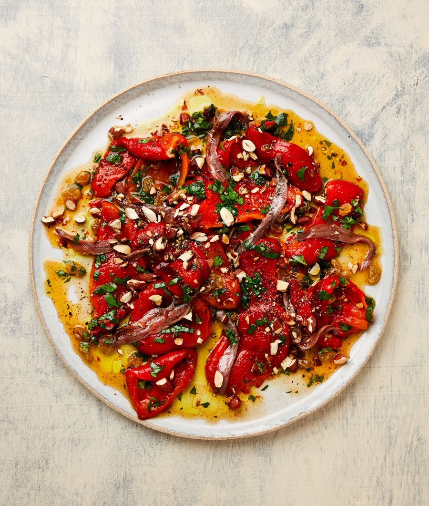

Roast red pepper salad with anchovies and almonds

This salad-cum-salsa works as well alongside roast chicken or any white fish as it does with the lamb. It’s also great served just as it is, as a fresh, light lunch, ideally with some crusty bread. Replace the anchovies with capers, if you prefer.
Put the raisins, both vinegars and the honey in a medium bowl and mix to combine.
Set a large cast-iron pan on a high heat and ventilate the kitchen. Lay in the peppers and char, turning every few minutes, for 20-25 minutes, until they are blackened all over (alternatively, char them under a very hot grill). Transfer the blistered peppers to a small bowl, cover with a plate and leave to steam for a few minutes. When the peppers are just cool enough to handle, peel off and discard the skin, and discard the stems and seeds. Peel the flesh into petals, add to the raisin bowl, then gently stir in the sesame oil, garlic, a tablespoon of olive oil, a quarter-teaspoon of salt and a good grind of pepper. Leave to marinate and cool for about 40 minutes.
Add the herbs to the bowl and give everything one last gentle tumble. Spoon the pepper mix and all of the marinade on to a large plate, drape the anchovies over the top, then scatter with the almonds and drizzle on the remaining tablespoon of olive oil. Grind some more black pepper on top, and serve.